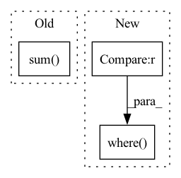

Pattern ID :11521

Before Change
threshold_low = float(clean_entropy[int(0.05 * len(clean_entropy))])
threshold_high = float(clean_entropy[int(0.95 * len(clean_entropy))])
print(f"Threshold: ({threshold_low:5.3f}, {threshold_high:5.3f})")
percent = float(((poison_entropy < threshold_low) +
(poison_entropy > threshold_high)).sum().float() / len(poison_entropy))
print("Classification Acc: ", percent)
def check(self, _input) -> torch.Tensor:
After Change
threshold_high = float(clean_entropy[int(0.95 * len(clean_entropy))])
y_true = torch.cat((torch.zeros_like(clean_entropy), torch.ones_like(poison_entropy)))
entropy = torch.cat((clean_entropy, poison_entropy))
y_pred = torch.where(((entropy < threshold_low).int() + (entropy > threshold_high).int()).bool(),
torch.ones_like(entropy), torch.zeros_like(entropy))
print(f"Threshold: ({threshold_low:5.3f}, {threshold_high:5.3f})")
print("f1_score:", metrics.f1_score(y_true, y_pred, average="weighted"))
print("precision_score:", metrics.precision_score(y_true, y_pred, average="weighted"))
print("recall_score:", metrics.recall_score(y_true, y_pred, average="weighted"))
In pattern: SUPERPATTERN
Frequency: 4
Non-data size: 3
Instances
Fragment ID: 39190806
Project Name: ain-soph/trojanzoo
Commit Name: b252ab7e9a5f58cee299ad63b05fca46835a6b65
Time: 2020-09-13
Author: ain-soph@live.com
File Name: trojanzoo/defense/backdoor/strip.py
M Class Name: STRIP
N Class Name: STRIP
M Method Name: detect(1)
N Method Name: detect(1)
M Parent Class: Defense_Backdoor
N Parent Class: Defense_Backdoor
M File Name: trojanzoo/defense/backdoor/strip.py
N File Name: trojanzoo/defense/backdoor/strip.py
M Start Line: 35
M End Line: 43
N Start Line: 35
N End Line: 49
'>
Before Change
if self.sim_func == "cosine":
y = torch.cosine_similarity(user_embedding, item_embedding, dim=1)
elif self.sim_func == "dot":
y = torch.mul(user_embedding, item_embedding).sum(dim=1)
else:
raise ValueError("similarity function only support %s, but got %s" % (["cosine", "dot"], self.sim_func))
sample_weight = self.embedding(x, self.sample_weight_feature, squeeze_dim=True).squeeze(1)
After Change
index0 = self.index0[:batch_size * (self.n_neg + 1)]
index1 = self.index1[:batch_size * (self.n_neg + 1)]
index0[np.where(index0 >= batch_size)] -= batch_size
index1[np.where(index1 >= batch_size)] -= batch_size
scores = scores[index0, index1]
else:
'>
Fragment ID: 39190803
Project Name: datawhalechina/torch-rechub
Commit Name: d0461152ddffad7a6bf7c7532b7b540094623e95
Time: 2022-06-07
Author: icewwl@163.com
File Name: torch_rechub/models/matching/youtube_sbc.py
M Class Name: YoutubeSBC
N Class Name: YoutubeSBC
M Method Name: forward(2)
N Method Name: forward(2)
M Parent Class: torch.nn.Module
N Parent Class: torch.nn.Module
M File Name: torch_rechub/models/matching/youtube_sbc.py
N File Name: torch_rechub/models/matching/youtube_sbc.py
M Start Line: 55
M End Line: 80
N Start Line: 60
N End Line: 87
'>
Before Change
encode_mask = torch.arange(encoder_variables.size(1)).unsqueeze(0) >= out["encode_lengths"].unsqueeze(-1)
encoder_variables = encoder_variables.masked_fill(encode_mask.unsqueeze(-1), 0.0).sum(
dim=1
) / encode_mask.logical_not().sum(dim=1).unsqueeze(-1)
decoder_variables = out["decoder_variables"].squeeze()
decode_mask = torch.arange(decoder_variables.size(1)).unsqueeze(0) >= out["decode_lengths"].unsqueeze(-1)
After Change
encode_mask = torch.arange(encoder_variables.size(1)).unsqueeze(0) >= out["encode_lengths"].unsqueeze(-1)
encoder_variables = encoder_variables.masked_fill(encode_mask.unsqueeze(-1), 0.0).sum(dim=1)
encoder_variables /= (
out["encode_lengths"].where(out["encode_lengths"] > 0, torch.ones_like(out["encode_lengths"])).unsqueeze(-1)
)
decoder_variables = out["decoder_variables"].squeeze()
'>
Fragment ID: 39190813
Project Name: jdb78/pytorch-forecasting
Commit Name: 220d37d8022703f4b190ec9e46c12a4d1dd4500a
Time: 2020-06-21
Author: beitner.jan@bcg.com
File Name: temporal_fusion_transformer_pytorch/model/__init__.py
M Class Name: TemporalFusionTransformer
N Class Name: TemporalFusionTransformer
M Method Name: interpret_output(4)
N Method Name: interpret_output(4)
M Parent Class: pl.LightningModule
N Parent Class: pl.LightningModule
M File Name: temporal_fusion_transformer_pytorch/model/__init__.py
N File Name: temporal_fusion_transformer_pytorch/model/__init__.py
M Start Line: 480
M End Line: 489
N Start Line: 495
N End Line: 503
'>
Before Change
flag = (abs_diff.data < (1. / sigma2)).float()
y = (flag * (sigma2 / 2.) * (diff ** 2) +
(1 - flag) * (abs_diff - 0.5 / sigma2))
return y.sum()
def _fast_rcnn_loc_loss(pred_loc, gt_loc, gt_label, sigma):
in_weight = torch.zeros(gt_loc.shape)
After Change
sigma_squared = sigma ** 2
regression_diff = (x - t)
regression_diff = regression_diff.abs()
regression_loss = torch.where(
regression_diff < (1. / sigma_squared),
0.5 * sigma_squared * regression_diff ** 2,
regression_diff - 0.5 / sigma_squared
)
return regression_loss.sum()
def _fast_rcnn_loc_loss(pred_loc, gt_loc, gt_label, sigma):
pred_loc = pred_loc[gt_label>0]
'>
Fragment ID: 39190811
Project Name: bubbliiiing/faster-rcnn-pytorch
Commit Name: d456f02a402fd8cf8db1d991aa612439b3c0ffb2
Time: 2021-01-30
Author: 47347516+bubbliiiing@users.noreply.github.com
File Name: trainer.py
M Class Name: AnonimousClass
N Class Name: AnonimousClass
M Method Name: _smooth_l1_loss(3)
N Method Name: _smooth_l1_loss(4)
M Parent Class:
N Parent Class:
M File Name: trainer.py
N File Name: trainer.py
M Start Line: 131
M End Line: 138
N Start Line: 127
N End Line: 135